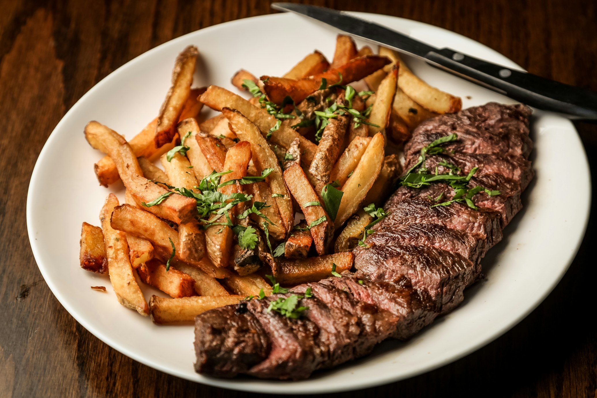

Steak and Chips Recipe

Description
This is a beautifully prepared sirloin steak.
With a side of russet potatoes, double fried to perfection.
Finished off with an elegant garnishing of parsely.
Ingredients
- Sirloin Steak
- Butter
- Salt
- Pepper
- Garlic
- Thyme
- Parsely
- Russet Potatoes
- Canola Oil
Instructions
- Peel and cut potatoes
- Cook Chips in deep frying pan
- Remove chips when partially cooked
- Put in chips for second round of frying
- Season steak with salt and pepper
- Pour canola oil into pan till smoking hot
- Place Steak in the pan, for around 4 minutes
- Flip the steak
- Put butter, garlic and thyme into the pan
- Tilt the pan and baste the steak in the buttery goodness
- Remove steak and chips from their respective pans and allow time to rest
- Plate and garnish with parsely trimmings